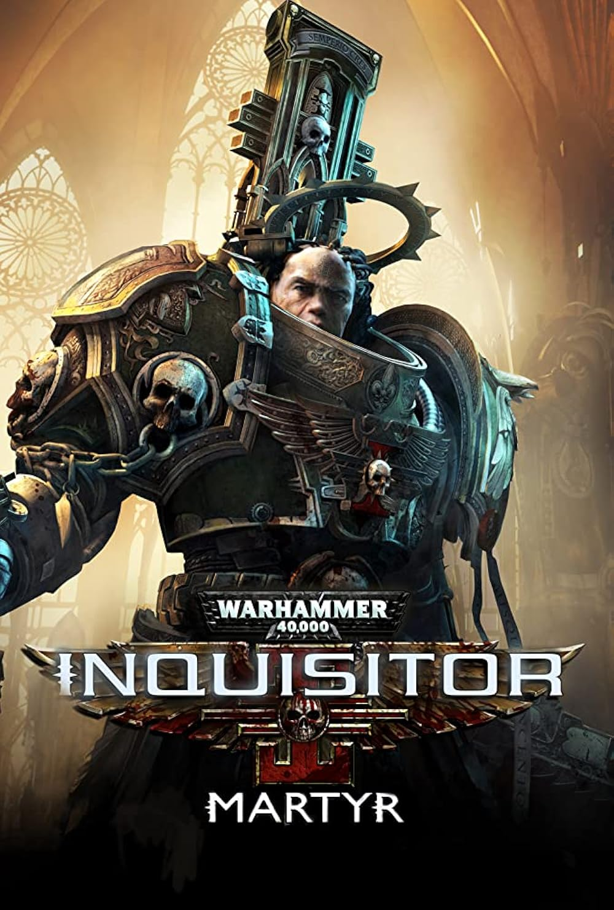

Warhammer 40.000 - Inquisitor Martyr
-
Client
NeocoreGames
-
Date
05-06-2018
-
Project link
PROJECT DESCRIPTION
- Role: VFX Compositor
- Core Stack: Fusion Studio
- Main Focus: Shot Compositing, VFX Integration, Color Grading, Render Team Pipeline Communication
A 3-minute high-end cinematic trailer set in the Warhammer 40,000 universe.
Operating strictly within the post-production stage using Fusion Studio, my role focused on the
final pixel integration of heavy atmospheric and action-heavy shots.
I was responsible for blending multi-pass renders, integrating complex VFX elements, executing the final color grade
to match the grimdark aesthetic, and maintaining a constant technical feedback loop with the rendering team to ensure
all necessary asset passes were correctly delivered.
MY TASKS
- Multi-Pass VFX Compositing: I assembled and blended complex 3D render layers inside Fusion Studio, seamlessly integrating environmental effects, atmospheric haze, and weapon fire to match the iconic WH40k art direction.
- VFX Element Integration: I placed and tracked secondary stock and digital FX elements (fog, smoke, sparks, debris, and explosions) into the footage to enhance the scale and intensity of the cinematic.
- Color Grading: I handled the final shot grading and color correction, ensuring strict visual continuity across diverse sequences and maintaining the specific grim, high-contrast tone of the franchise.
- Cross-Department Technical Communication: I acted as a direct link to the 3D rendering team, communicating specific technical needs regarding AOVs, utility masks, or re-render requirements to optimize the compositing workflow.